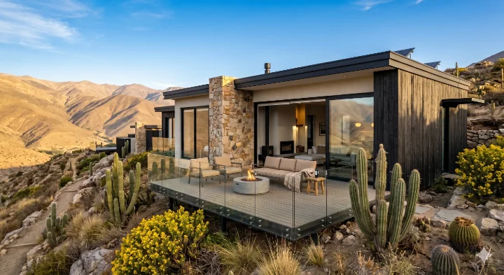

Diseñamos y construimos según tu terreno y presupuesto en el interior de la IV Región. Catálogo de 15 a 171 m². El kit va en madera estructural y, en 72 y 141 m², también en Vulcometal.
El Desafío Climático del Interior
A diferencia de la costa, el interior de la Región de Coquimbo experimenta una amplitud térmica diaria de hasta 42°C en los valles de Limarí y Elqui. En pleno verano, el termómetro puede marcar +38°C al mediodía y bajar a -4°C antes del amanecer.
Una construcción convencional de albañilería o un prefabricado genérico de perfil delgado sin núcleo aislante suficiente convierte tu casa en un horno de día y en una cámara frigorífica de noche. El consumo en calefacción y climatización se dispara.
El formato de venta es el Kit Inicial: paneles de madera, techumbre de zinc, yeso cartón y planos. Cielo, forro y ventanas se suman como kits. En 72 m² y 141 m² también está Vulcometal.
Catálogo
El catálogo va de 15 a 171 m². Para el interior se cotizan seguido el Coquimbo 63 m², el Familiar 72 m², el Coquimbo 128 m² y la Gran Casona 171 m². El formato base es el Kit Inicial en madera estructural. Vulcometal está en 72 m² y 141 m².
Cobertura: Ovalle, Monte Patria, Vicuña, Valle del Elqui, Limarí, Illapel, Los Vilos, La Serena, Coquimbo, Tongoy, Guanaqueros, Morrillos y Pichidangui.
Ingeniería para el Interior Semiárido
Asesoramos proyectos prefabricados en el interior de la Región de Coquimbo. Te ayudamos a elegir materialidad, comparar fabricantes locales y cotizar según la amplitud térmica de tu zona.
En Ovalle y el valle la cotización parte del modelo y del Kit Inicial. Cielo, forro y ventanas se suman si el terreno pide más abrigo. No publicamos un valor de aislamiento que el kit no declara.
Los revestimientos exteriores deben considerar tratamiento UV-estabilizado en zonas de alta radiación como el interior de Coquimbo. Te orientamos sobre opciones según el fabricante y tu presupuesto.
En el Valle del Limarí el acceso al agua puede ser irregular (APR, cisterna o pozo). Te orientamos sobre qué considerar en instalaciones sanitarias según tu predio y el fabricante elegido.
Los kits prefabricados suelen fabricarse en paneles modulares transportables en camión por caminos de ripio. Evaluamos contigo el acceso al predio antes de cotizar con fabricantes de Monte Patria, Punitaqui o el Limarí.
Cobertura en el Interior
Capital del Limarí. Cobertura total.
Valle de Elqui. Turismo y astroturismo.
Cuenca alta del Limarí. Parcelas agrícolas.
Zona agrícola y minera del Limarí.
Cuarzo y turismo rural en el secano.
Cordillera y retiro en precordillera.
Cotizador Ovalle / Interior
Especifica tu proyecto de parcela de agrado, terreno agrícola o casa de veraneo en Ovalle y el interior. Un especialista en zonas de alta amplitud térmica te contactará con el catálogo técnico adecuado para tu zona.
¿Tienes un terreno en el interior?
Indica en el formulario el tipo de acceso al predio (pavimento, ripio o tierra) y si cuentas con agua potable o APR. Esto nos permite dimensionar correctamente los costos de transporte e instalación para tu zona.
4 pasos · Ovalle y Valle del Limarí
Estilo, metros, comuna y WhatsApp. Te respondemos el mismo día hábil.
Kit para el interior
El Kit Inicial trae paneles de madera estructural, cerchas y zinc, yeso cartón, y los planos de armado y de planta. En 72 m² y 141 m² también se cotiza Vulcometal, de acero galvanizado liviano.
Sobre ese kit se pueden sumar piso, cielo, forro, ventanas, puertas, siding y teja. La sucursal y planta de atención está en Sector Peñuelas, Coquimbo.
Ver catálogo y cotizarPreguntas del Interior
Las preguntas que nos hacen los clientes del interior de la IV Región antes de decidir su proyecto.
+56 9 9428 4048Un modelo del catálogo, de 15 a 171 m², con Kit Inicial en madera. En 72 m² y 141 m² también está Vulcometal. La cotización lleva el modelo, la materialidad y la comuna del terreno: Ovalle, Monte Patria, Vicuña o el Valle del Elqui.
En muchos casos sí. Los paneles y perfiles suelen transportarse en módulos de 1.2 m a 3.6 m en camiones de carga general, sin grúa en sitio. Depende del acceso al predio; consúltanos por WhatsApp con la distancia desde la ruta pavimentada y te orientamos.
En predios sin red, muchos proyectos consideran cisterna y bomba de presión según el fabricante. En zonas con APR, los empalmes se conectan a la red. Te orientamos sobre opciones para Ovalle, Monte Patria y comunas del interior según tu caso.
Puede aplicar si el proyecto cumple requisitos del SERVIU Coquimbo (superficie mínima, especificaciones técnicas y terreno propio). Te orientamos sobre condiciones del DS-49 para sectores rurales; la documentación técnica la elabora el fabricante o profesional a cargo.
No instales una casa prefabricada genérica sin aislamiento en una zona con 40°C de amplitud térmica. Contáctanos y te asesoramos en el sistema correcto para tu predio en Ovalle, Monte Patria, Vicuña o Punitaqui.